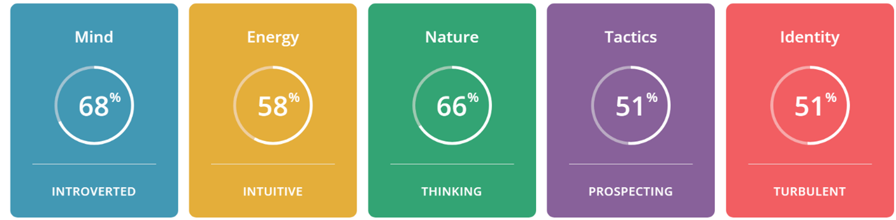
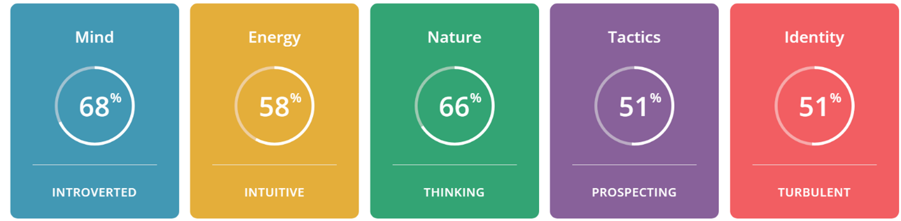

Personal Details
I was born in Australia and live in Canberra. I have 2 children, one studying Film at university and one in college. I have an Associate Diploma in Information Technology which I completed after I finished secondary school. I went on to become a programmer for over 10 years mostly in mainframe systems however I have had a long break from the industry and am enjoying studying again.
I love hiking with my partner, we are working our way through All Trails app finding beautiful walks to enjoy. I play tennis regularly, play the piano, love gardening, cooking and spending time with friends and family.
 
